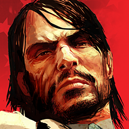

Red Dead RedemptionDetalles
 |
|
| Tiempo de juego | 1m 18s |
| Última actividad | 12/12/2025 1:40:20 |
| Añadido | 17/11/2025 18:12:25 |
| Modificado | 2/12/2025 23:23:49 |
| Estado de finalización | Jugado |
| Librería | Playnite |
| Fuente | |
| Plataforma | PC (Windows) |
| Fecha de lanzamiento | 18/5/2010 |
| Puntuación de la Comunidad | 89 |
| Puntuación de la Crítica | 92 |
| Puntuación de usuario | |
| Género | Adventure Role-playing (RPG) Shooter |
| Desarrollador | Rockstar North Rockstar San Diego |
| Editor | Rockstar Games Take-Two Interactive |
| Característica | Multiplayer Single Player |
| Enlaces | Steam |
| Tag | |
Descripción
Acá nos sacamos el sombrero ante una de las mejores y más emotivas historias que se han contado en un videojuego. Punto. La obra maestra de Rockstar que definió el género western para siempre.
Te ponés en las botas gastadas de John Marston, un ex-forajido que solo quiere colgar las espuelas y vivir en paz con su familia. Pero los agentes federales lo tienen agarrado de las bolas y lo obligan a cazar a los miembros de su antigua banda. Es un viaje melancólico y brutal por la frontera en los albores del siglo XX, un mundo de cowboys que se está muriendo para dar paso a la "civilización". La historia es cine puro.
Y el mundo... mamita, qué mundo. Rockstar creó un oeste salvaje que respira. Cabalgar por el desierto al atardecer, escuchar los coyotes, cruzarte con un duelo en un pueblo polvoriento o ayudar a un desconocido en el camino... no era un mapa con íconos, era un lugar. La inmersión era (y sigue siendo) de otro planeta, con un sistema de honor y fama que reaccionaba a tus acciones.
Jugar Red Dead Redemption es una experiencia fundamental. Es una historia adulta, emotiva y trágica que se te queda grabada a fuego en la memoria. Su mundo abierto y su protagonista definieron un estándar de calidad narrativa que pocos han logrado igualar.